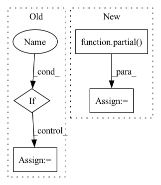

Pattern ID :6105

Before Change
scheduler = None
else:
assert args.optimizer == "sgd"
if args.transformer_lr:
opt = torch.optim.SGD(model.params, lr=args.transformer_lr_multiply, weight_decay=args.weight_decay, )
lr_lambda = partial(get_sgd_learning_rate, warmup=args.warmup)
scheduler = torch.optim.lr_scheduler.LambdaLR(opt, lr_lambda)
else:
opt = torch.optim.SGD(model.params, lr=args.lr_rate, weight_decay=args.weight_decay, )
scheduler = None
return opt, scheduler
After Change
elif args.lr_schedule == "constant":
lr_lambda = partial(get_constant_schedule_with_warmup, num_training_steps=sum(args.train_iterations), num_warmup_steps=args.warmup)
elif args.lr_schedule == "linear":
lr_lambda = partial(get_linear_schedule_with_warmup, num_training_steps=sum(args.train_iterations), num_warmup_steps=args.warmup)
elif args.lr_schedule == "sgd":
lr_lambda = partial(get_sgd_learning_rate, warmup=args.warmup)
else:
raise ValueError("Invalid learning rate scheduler.")
In pattern: SUPERPATTERN
Frequency: 3
Non-data size: 4
Instances
Fragment ID: 21126819
Project Name: stanford-oval/genienlp
Commit Name: 3a2f36c80dcda4827bcf73a906d62c6862c46195
Time: 2020-12-22
Author: s.j.semnani@gmail.com
File Name: genienlp/train.py
M Class Name: AnonimousClass
N Class Name: AnonimousClass
M Method Name: init_opt(3)
N Method Name: init_opt(3)
M Parent Class:
N Parent Class:
M File Name: genienlp/train.py
N File Name: genienlp/train.py
M Start Line: 429
M End Line: 455
N Start Line: 427
N End Line: 452
'>
Before Change
dims = [channels, *map(lambda m: dim * m, dim_mults)]
in_out = list(zip(dims[:-1], dims[1:]))
if with_time_emb:
time_dim = dim
self.time_mlp = nn.Sequential(
SinusoidalPosEmb(dim),
nn.Linear(dim, dim * 4),
nn.GELU(),
nn.Linear(dim * 4, dim)
)
else:
time_dim = None
self.time_mlp = None
self.downs = nn.ModuleList([])
self.ups = nn.ModuleList([])
After Change
self.ups = nn.ModuleList([])
num_resolutions = len(in_out)
conv_next = partial(ConvNextBlock, time_emb_dim = time_dim)
for ind, (dim_in, dim_out) in enumerate(in_out):
is_last = ind >= (num_resolutions - 1)
'>
Fragment ID: 21126823
Project Name: lucidrains/video-diffusion-pytorch
Commit Name: 12fac4c86d51e844ecae1514568355d7be6b4833
Time: 2022-04-13
Author: lucidrains@gmail.com
File Name: video_diffusion_pytorch/video_diffusion_pytorch.py
M Class Name: Unet3D
N Class Name: Unet3D
M Method Name: __init__(5)
N Method Name: __init__(6)
M Parent Class: nn.Module
N Parent Class: nn.Module
M File Name: video_diffusion_pytorch/video_diffusion_pytorch.py
N File Name: video_diffusion_pytorch/video_diffusion_pytorch.py
M Start Line: 215
M End Line: 251
N Start Line: 241
N End Line: 272
'>
Before Change
:param rank:
:return:
if rank:
ic = pred_label.groupby(level="datetime").apply(
lambda x: x["label"].rank(pct=True).corr(x["score"].rank(pct=True))
)
else:
After Change
ic_df = pd.concat(
[
pred_label.groupby(level="datetime").apply(partial(_corr_series, method=_methods_mapping[m])).rename(m)
for m in methods
],
axis=1,
)
_ic = ic_df.iloc(axis=1)[0]
_index = _ic.index.get_level_values(0).astype("str").str.replace("-", "").str.slice(0, 6)
_monthly_ic = _ic.groupby(_index).mean()
_monthly_ic.index = pd.MultiIndex.from_arrays(
[_monthly_ic.index.str.slice(0, 4), _monthly_ic.index.str.slice(4, 6)],
names=["year", "month"],
)
// fill month
_month_list = pd.date_range(
start=pd.Timestamp(f"{_index.min()[:4]}0101"),
end=pd.Timestamp(f"{_index.max()[:4]}1231"),
freq="1M",
)
_years = []
_month = []
for _date in _month_list:
_date = _date.strftime("%Y%m%d")
_years.append(_date[:4])
_month.append(_date[4:6])
fill_index = pd.MultiIndex.from_arrays([_years, _month], names=["year", "month"])
_monthly_ic = _monthly_ic.reindex(fill_index)
ic_bar_figure = ic_figure(ic_df, kwargs.get("show_nature_day", False))
ic_heatmap_figure = HeatmapGraph(
_monthly_ic.unstack(),
layout=dict(title="Monthly IC", xaxis=dict(dtick=1), yaxis=dict(tickformat="04d", dtick=1)),
graph_kwargs=dict(xtype="array", ytype="array"),
).figure
dist = stats.norm
_qqplot_fig = _plot_qq(_ic, dist)
if isinstance(dist, stats.norm.__class__):
dist_name = "Normal"
else:
dist_name = "Unknown"
_ic_df = _ic.to_frame("IC")
_bin_size = ((_ic_df.max() - _ic_df.min()) / 20).min()
_sub_graph_data = [
(
'>
Fragment ID: 21126826
Project Name: microsoft/qlib
Commit Name: 2f5ce3dc01e6209520bd0d9bda52ed6d0188398e
Time: 2022-12-30
Author: qianyun210603@hotmail.com
File Name: qlib/contrib/report/analysis_model/analysis_model_performance.py
M Class Name: AnonimousClass
N Class Name: AnonimousClass
M Method Name: _pred_ic(2)
N Method Name: _pred_ic(2)
M Parent Class:
N Parent Class:
M File Name: qlib/contrib/report/analysis_model/analysis_model_performance.py
N File Name: qlib/contrib/report/analysis_model/analysis_model_performance.py
M Start Line: 113
M End Line: 161
N Start Line: 120
N End Line: 187